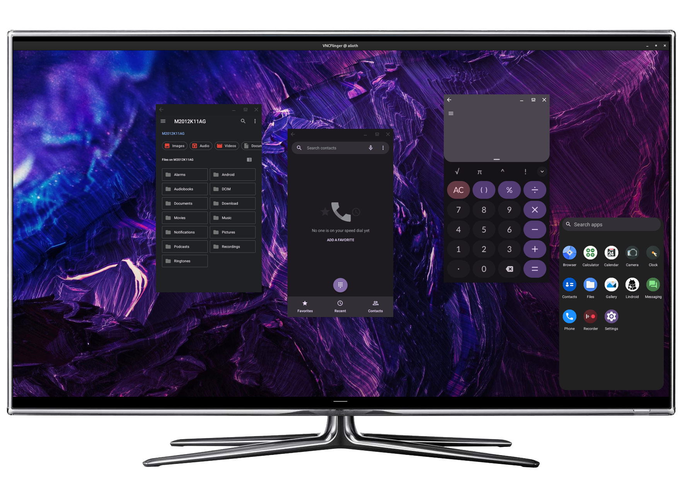
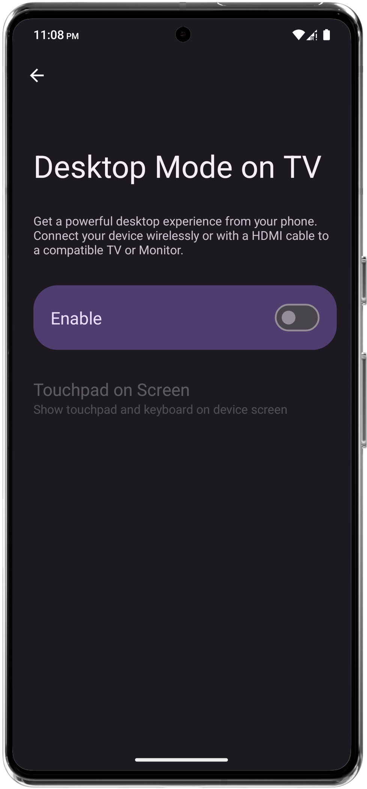
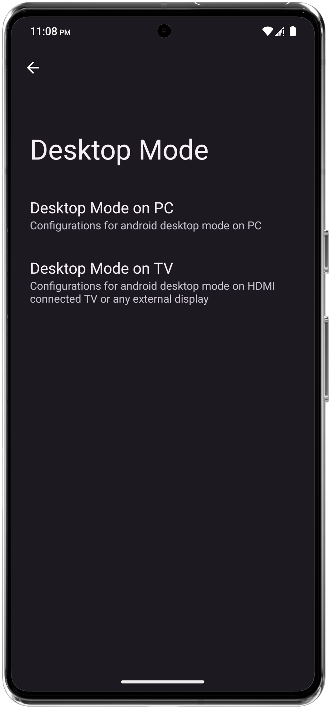
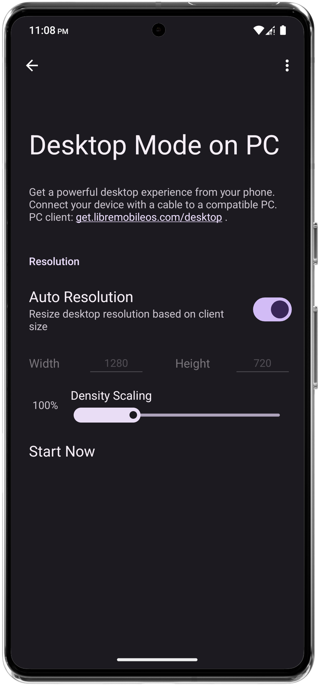

LMODroid
LMODroid is an AOSP-based mobile OS aiming to ease transition to de-googled(*) Android use-cases, while also supporting using Google services. Additionally, we want to make everyday experience better with useful features
feature
feature




Minimal cross-platform desktop UI, powered by VNC server You can use it via USB cable and adb in your desktop and HDMI in Monitor or TV also you can stream audio and share clipboard Download desktop clients from here